Network flows
Adolfo De Unánue Adolfo De Unánue Adolfo De Unánue
Introduction and Recap of Last Class
Anuncios
Repaso de la última clase
Lecture Outline
Grafos
Conceptos
Representación
Matriz de Adyacencia
Lista de Adyacencia
Ejemplo

Se puede representar como lista de adyacencia como sigue:
graph = {}
graph["A"] = {"B", "C"}
graph["B"] = {"D", "E", "C"}
graph["C"] = {"E"}
graph["D"] = {"E", "F"}
graph["E"] = {"F"}
graph["F"] = set()
graph["G"] = set()
Ejemplos de Redes
| Nodos | Arcos | Flujo |
|---|---|---|
| Cruceros | Caminos | Vehículos |
| Aeropuertos | Líneas aéreas | Aviones |
| Puntos de conmutación | Cables, canales | Mensajes |
| Estaciones de bombeo | Tuberías | Fluidos |
| Centros de trabajo | Rutas de manejo de materiales | Trabajos |
Orden Topológico
Entrada: DAG \(G = (N, A)\)
Salida: Una lista ordenada de nodos tal que para cada arista \(i \to j\), \(i\) aparezca primero que \(j\).
Obviamente puede haber varias respuestas
Uno de los algoritmos más fáciles de implementar (y bastante rápido \(\mathcal{O}(n + m)\)) es el algoritmo de Kahn.
Algoritmo de Kahn
La idea básica es remover repetidamente los nodos \(v\) que tienen \(indeg(v) = 0\).
Ejemplo
(Tomado del libro A Gentle Introduction to Optimization)
Quieres construir una casa y has dividio el proceso en un conjunto de tareas:
Las cuales tienen los siguientes estimados (en semanas):
| Tarea | B | F | E | P | D | L |
|---|---|---|---|---|---|---|
| Duración | 3 | 2 | 3 | 4 | 1 | 2 |
Algunas tareas sólo pueden empezar cuando las otras han concluido:
La meta es determinar los tiempos de cada tarea tal que el proyecto completo sea terminado lo antes posible
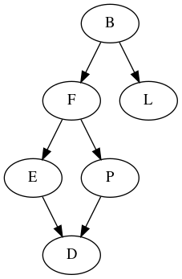
Figure 2: Grafo de dependencia de actividades del ejemplo de landscaping
En python
tasks = {}
tasks['B'] = {'F', 'L'}
tasks['F'] = {'E', 'P'}
tasks['E'] = {'D'}
tasks['P'] = {'D'}
tasks['L'] = set()
tasks['D'] = set()
topological_order(tasks)
Rutas más cortas
El algoritmo BFS nos da la ruta más corta entre dos nodos, si todos los vértices tienen un costo \(1\).
def shortest_path(graph, source, target):
"""
Devuelve el path más corto, asumiendo que el costo es 1 en *todos* los arcos
"""
goal = lambda nodo: nodo == target
try:
return next(BFS(graph, source, goal))
except StopIteration:
return None
Si tenemos costos en los arcos, BFS no nos da la ruta más corta. Para eso, debemos de utilizar el algoritmo de Dijkstra
El problema es planteado como un problema de optimización de la manera siguiente:
Sea un grafo \(G = (N,A)\) con un costo en cada arco \((i,j) \in A\), \(c_{ij}\). \(G\) tiene un nodo especial, designado por \(s\) (source). Sea \(A(i)\) la lista de arcos adyacentes al nodo \(i\) y sea \(C = max\{c_{ij}: (i,j) \in A\}\).
Definimos la longitud de un camino dirigido como la suma de costos de los arcos en el camino (path). El problema de la distancia mínima es encontrar para cada nodo $ i ∈ N ≠ s$ la longitud de camino dirgido desde \(s\) a \(i\).
También se puede plantear como el problema de mandar una unidad de flujo tan baratamente como sea posible del nodo \(s\) a cada uno de los nodos en \(N - \{s\}\):
Suposiciones
Las suposiciones que hace este problema son:
Si se violan las suposiciones 1 y 3, se debe de utilizar el algoritmo de Bellman-Ford.
Algoritmo de Dijkstra
El algoritmo de Dijkstra no es complicado en sí:
Entrada: Un DAG \(G(N,A)\), un nodo \(s \in N\), un nodo \(t \in N\), una lista \(C_A\) con los costos de todos los arcos en A.
Salida: Lista de vértices \(v\) con el costo más pequeño de \(s\) a \(v\)
Es importante mencionar, que al igual que el algoritmo de ordenamiento topológico, el algoritmo de Dijkstra sólo funciona con DAGs.
Escrito como pseudocódigo es lo siguiente:
algoritmo dijkstra ( G, costs, source, target )
S = {}
S' = {N}
d[i] = infinity para todos los nodos i en N
d[source] <- 0
pred[s] <- 0
while |S| < |N|:
i <- arg{d[i] = min{d[j] j in S'}} # node selection
S <- S + i
S' <- S' - i
for each (i,j) en A(i)
if d[j] > d[i] + costs[i,j] then # dijkstra_score
d[j] <- d[i] + costs[i,j] # distance update
pred[j] <- i
def pretty_dijkstra(network, source, target):
solucion = dijkstra(network, source, target)
predecesores = solucion['predecesores']
dijkstra_scores = solucion['dijkstra_scores']
path = deque()
if source in predecesores and target in predecesores:
path.extend(target)
nodo = target
while nodo is not source:
nodo = predecesores[nodo]
path.extendleft(nodo)
return {'path': list(path), 'costo': dijkstra_scores[target]}
Ejemplo
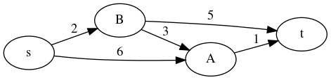
Figure 3: Grafo para el ejemplo de la ruta más corta
Implementación en Python
Nota que nuestra red ahora tiene más riqueza que los grafos anteriores. Ahora tenemos información en el arco. Esta información, nos obliga a cambiar la estructura de datos que estábamos usando hasta ahora:
example_1 = {}
example_1["s"] = {}
example_1["s"]["A"] = 6
example_1["s"]["B"] = 2
example_1["A"] = {}
example_1["A"]["t"] = 1
example_1["B"] = {}
example_1["B"]["A"] = 3
example_1["B"]["t"] = 5
example_1["t"] = {}
Tenemos un diccionario dentro de un diccionario.
Ejercicio: ¿Cuál es el costo usando BFS?
pretty_dijkstra(example_1, 's', 't')
: {'path': ['s', 'B', 'A', 't'], 'costo': 6}
Ejemplo
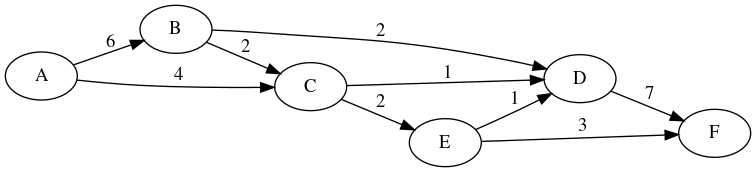
Figure 4: Grafo para el segundo ejemplo de la ruta más corta
example_2 = {}
example_2["A"] = {}
example_2["A"]["B"] = 6
example_2["A"]["C"] = 4
example_2["B"] = {}
example_2["B"]["C"] = 2
example_2["B"]["D"] = 2
example_2["C"] = {}
example_2["C"]["D"] = 1
example_2["C"]["E"] = 2
example_2["D"] = {}
example_2["D"]["F"] = 7
example_2["E"] = {}
example_2["E"]["D"] = 1
example_2["E"]["F"] = 3
example_2["F"] = {}
pretty_dijkstra(example_2, 'A', 'F')
: {'path': ['A', 'C', 'E', 'F'], 'costo': 9}
Ejemplo

Figure 5: Grafo para el tercer ejemplo de la ruta más corta
example_3 = {}
example_3["A"] = {}
example_3["A"]["B"] = 5
example_3["A"]["C"] = 3
example_3["A"]["D"] = 8
example_3["B"] = {}
example_3["B"]["C"] = 3
example_3["B"]["D"] = 2
example_3["C"] = {}
example_3["C"]["E"] = 4
example_3["C"]["F"] = 8
example_3["D"] = {}
example_3["D"]["C"] = 4
example_3["D"]["F"] = 2
example_3["E"] = {}
example_3["E"]["D"] = 4
example_3["E"]["F"] = 3
example_3["F"] = {}
pretty_dijkstra(example_3, 'A', 'F')
: {'path': ['A', 'B', 'D', 'F'], 'costo': 9}
Ejemplo
¿Cuál es la programación más efectiva en costo para remplazar equipo en un periodo de tiempo? (Tomado de: Operations Research A practical Introduction)
Supongamos que tienes circuitos para conversión de analógico a digital en una computadora de navegación que deben de ser remplazados en intervalos en un periodo de 6 meses. Idealmente, el reemplazo debe ocurrir antes de que ocurra una falla, pero, reemplazos frecuentes incurren en costos de capital y costos de labor para la instalación, por otro lado, si no se hacen, es decir, hay pocos reemplazos, quizá esta decisión lleve a costos de mantenimiento y a tiempos muy grandes sin operación.
Se han recolectado costos de la compra, instalación, mantenimiento, costos de downtime que han sido resumidos en la siguiente tabla:
| PCB Reemplazado | Feb | Mar | Abr | May | Jun | |
|---|---|---|---|---|---|---|
| PCB instalado | ||||||
| Ene | 5.00 | 6.75 | 8.25 | 12.50 | 16.80 | |
| Feb | 5.25 | 6.25 | 9.50 | 11.50 | ||
| Mar | 5.25 | 7.25 | 9.00 | |||
| Abr | 5.50 | 8.20 | ||||
| May | 5.80 |
Ejercicio
Árboles de expansión mínima
Pseudo algoritmo
Ejemplo
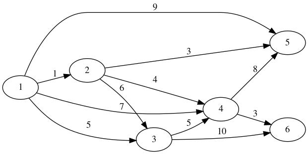
Figure 6: Grafo para el ejemplo del árbol de expansión mínima. Tomado de [tahaInvestigacionOperaciones10a2017]
Implementación en python
mst = {}
mst['1'] = {}
mst['1']['2'] = 1
mst['1']['4'] = 7
mst['1']['3'] = 5
mst['1']['5'] = 9
mst['2'] = {}
mst['2']['1'] = 1
mst['2']['3'] = 7
mst['2']['4'] = 4
mst['2']['5'] = 3
mst['3'] = {}
mst['3']['1'] = 5
mst['3']['2'] = 7
mst['3']['6'] = 10
mst['3']['4'] = 5
mst['4'] = {}
mst['4']['1'] = 7
mst['4']['2'] = 4
mst['4']['3'] = 5
mst['4']['5'] = 8
mst['4']['6'] = 3
mst['5'] = {}
mst['5']['1'] = 9
mst['5']['4'] = 8
mst['5']['2'] = 3
mst['6'] = {}
mst['6']['4'] = 3
mst['6']['3'] = 10
arbol_expansion_minima(mst)
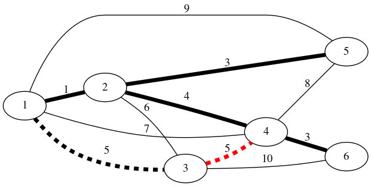
Figure 7: Grafo solución para el ejemplo del árbol de expansión mínima. En rojo se muestra una arco alterno. Tomado de [tahaInvestigacionOperaciones10a2017]
Ejemplo
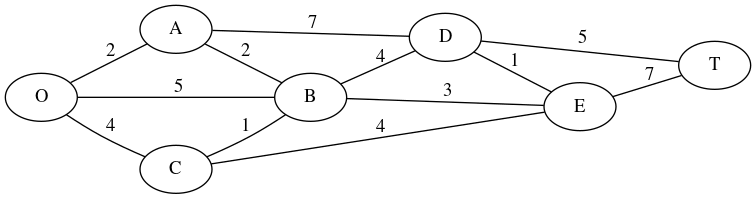
Figure 8: Estructura de caminos del Parque Seervada. Ejemplo tomado de [hillierINVESTIGACIONOPERACIONES2015]
Siendo O la entrada al parque y T un mirador. Muchos visitantes van al parque justo a esta atracción.
Implementación en python
seervada = {}
seervada['O'] = {}
seervada['O']['A'] = 2
seervada['O']['B'] = 5
seervada['O']['C'] = 4
seervada['A'] = {}
seervada['A']['O'] = 2
seervada['A']['B'] = 2
seervada['A']['D'] = 7
seervada['B'] = {}
seervada['B']['O'] = 5
seervada['B']['A'] = 2
seervada['B']['C'] = 1
seervada['B']['D'] = 4
seervada['B']['E'] = 3
seervada['C'] = {}
seervada['C']['O'] = 4
seervada['C']['B'] = 1
seervada['C']['D'] = 4
seervada['D'] = {}
seervada['D']['A'] = 7
seervada['D']['B'] = 4
seervada['D']['E'] = 1
seervada['D']['T'] = 5
seervada['E'] = {}
seervada['E']['B'] = 3
seervada['E']['C'] = 4
seervada['E']['D'] = 1
seervada['E']['T'] = 7
seervada['T'] = {}
seervada['T']['D'] = 5
seervada['T']['E'] = 7
Problemas del Parque Seerveda
El parque enfrenta tres problemas principalmente
shortest_path(seervada, 'O', 'T')
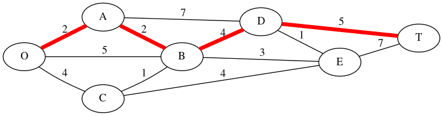
Figure 9: Ruta más corta de la entrada del parque al mirador T del Parque Seervada. Ejemplo tomado de [hillierINVESTIGACIONOPERACIONES2015]
arbol_expansion_minima(seervada)
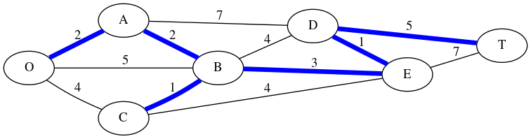
Figure 10: Árbol de expansión mínima del parque al mirador T del Parque Seervada. Ejemplo tomado de [hillierINVESTIGACIONOPERACIONES2015]
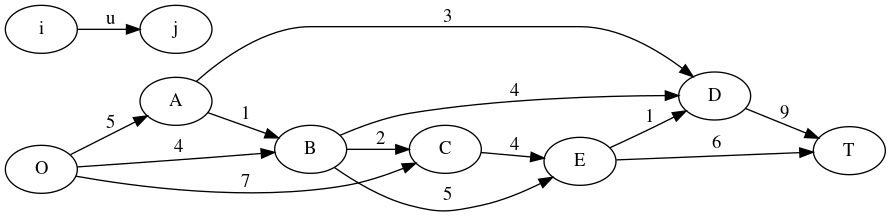
Figure 11: Red de caminos del Parque Seervada. Los arcos muestran su capacidad máxima, no la distancia. Tomado de [hillierINVESTIGACIONOPERACIONES2015]
Maximum Flow
El problema de flujo máximo (maximum flow problem) está muy relacionado con el de shortest path, pero en lugar de hacer uso de los costos como este, se encarga de las capacidades.
El problema de flujo máximo se puede plantear como sigue: Sea \(G(N,A)\) un grafo en el cual los nodos \(1\) y \(n\), \(\in N\) se denominan source y target (también los llamaremos \(s\) y \(t\), origen y destino, fuente y sumidero, etc). A los nodos restantes se les conoce como nodos de transbordo. Las variables de decisión \(x_{ij}\) denotan la cantidad de flujo a lo largo del arco \((i,j) \in A\). La capacidad del arco \((i,j) \in A\) se denota por \(u_{ij}\).
La función a optimizar, \(f\), representa el flujo total a lo largo de la red. La primera restricción asegura que el flujo \(f\) salga del source y la segunda que el flujo \(f\) llegue a target. La tercera restricción se conoce como ecuaciones de conservación de flujo y las últimas dos aseguran que no se violen las limitantes físicas del arco. En particular las ecuaciones de conservación de flujo hacen redundante la segunda restricción.
Restricciones
Las restricciones se pueden resumir en
Suposiciones
Las suposiciones son:
Algoritmo Ford Fulkerson
El algoritmo para resolver el problema de flujo máximo, es el algoritmo de Ford-Fulkerson, en pseudocódigo es:
La idea intuitiva del algoritmo de Ford-Fulkerson consiste en encontrar uno a uno todos los caminos de aumento de una red y aumentar el flujo sobre estos caminos hasta que ya no se pueda enviar más flujo de la fuente al sumidero.
algoritmo ford_fulkerson(grafo, s, t)
flujos[i,j] <- 0, para todo (i,j) en A
invocar función encontrar_flujo
si existen caminos por aumentar
encontrar aumentar_camino
incrementar el flujo
invocar incrementar_flujo
Hay varias maneras de explicar el algoritmo que resuelve este problema. En estas notas usaremos el método de la red residual, siguiendo a [ahujaNetworkFlowsTheory1993], aunque también se puede leer una explicación similar en [hillierINVESTIGACIONOPERACIONES2015].
Red residual
Dado un flujo \(x\), la capacidad residual \(r_{ij}\) de \((i,j) \in A\) es el máximo flujo adicional que puede ser mandado de \(i\) a \(j\) usando los arcos \((i,j)\) y \((j.i)\).
La capacidad residual \(r_{ij}\) tiene dos componentes (1) \(u_{ij} - x_{ij}\), la capacidad disponible \(u_{ij}\) de \((i,j)\) y (2) El flujo actual \(x_{ji}\) en el arco \((j,i)\) el cual podemos cancelar al incrementar el flujo de \(i\) a \(j\).
\[ r_{ij} = u_{ij} - x_{ij} + x_{ji} \]
Diremos que \(G(x)\) es la red residual respecto al flujo \(x\), como aquella red que contiene los arcos con \(r_{ij} \geq 0\).
Figure 12: Red original. Antes de aplicar el algoritmo de red residual.
Esta red es más compleja que las anteriores, ya que tiene más de un
atributo en los arcos, capacidad y flujo.
G = {}
G['A'] = {}
G['A']['B'] = { 'capacidad':2, 'flujo':2 }
G['A']['C'] = { 'capacidad':4, 'flujo':3 }
G['B'] = {}
G['B']['C'] = { 'capacidad':3, 'flujo':2 }
G['B']['D'] = { 'capacidad':1, 'flujo':0 }
G['C'] = {}
G['C']['D'] = {'capacidad':5, 'flujo':5}
G['D'] = {}
La red residual se ve así:
{kind=link}
Figure 13: Red residual que se obtiene después de aplicar el algoritmo de red residual.
residual_network(G)
: {'A': {'C': {'capacidad': 1}},
: 'B': {'A': {'capacidad': 2}, 'C': {'capacidad': 1}, 'D': {'capacidad': 1}},
: 'C': {'A': {'capacidad': 3}, 'B': {'capacidad': 2}},
: 'D': {'C': {'capacidad': 5}}}
Forward y Backward edges
Sea \(x\) un flujo en la red. Si el flujo, \(x_{ij}\) que cruza el arco \((i,j)\) es menor que \(u_{ij}\), decimos que la red residual tiene un forward edge entre \(i\) y \(j\) con una capacidad igual a la \(u_{ij} - x_{ij}\), llamada capacidad residual, \(r_{ij}\).
Si \(x_{ij}\) es positivo hay un backward edge \((j,i)\) con una capacidad igual a \(x_{ij}\).
Nota que en la red aumentada los arcos con flujo igual a cero, son removidos.
Augmenting path
Un camino aumentado (augmenting path) es simplemente un camino que va de \(s\) a \(t\) en la red residual \(G(x)\). El mínimo de las capacidades residuales se llama capacidad residual de la trayectoria de aumento, porque es la cantidad de flujo que es factible agregar en toda la trayectoria.
Nota que existe un flujo positivo entre los nodos fuente y sumidero a lo largo del augmenting path en la red original \(G\). Es decir, en \(G\) hay un camino (no necesariamente dirigido) de la fuente al destino con \(x_{ij} < u_{ij}\) en cada forward arc \((i,j)\) y \(x_{ij} >0\) en cada backward arc \((i,j)\).
Algoritmo de Ford-Fulkerson (de nuevo)
Empieza sin flujo en la red, luego incrementa el flujo de la red mientras haya un augmenting path de \(s\) a \(t\) que no contenga forward edges llenos o backward edges vacíos, i.e. mientras haya un camino en la red residual.
algoritmo ford_fulkerson(G, s, t)
f[i,j] <- 0 , para todo (i,j) en A
G_x <- G
while augmenting_path in G_x
p <- find directed path en G_x de s a t
si p
d_f = min { u_ij, (i,j) en p }
for (i,j) en p
if forward(i,j)
f[i,j] = f[i,j] + d_f
if backward(i,j)
f[i,j] = f[i,j] - d_f
actualizar G_x
return f, suma de flujos que llegan a t
Lo único que queda por especificar es como encontrar un camino dirigido en \(G(x)\) de \(s\) a \(t\). Una opción es utilizar los algoritmos de búsqueda, en particular, podemos usar el algoritmo BFS. Si lo hacemos así, el algoritmo se llama algoritmo de Edmons-Karp.
Ejercicio
Implementa el algoritmo Ford-Fulkerson, con la siguiente firma:
def ford_fulkerson(graph, s, t, augmenting_path=shortest_path):
...
return {'flow':{}, 'max_flow': max_flow}
donde el valor del parámetro augmenting_path es el nombre de una
función, por default será BFS.
Ejemplo: Paso a paso
Volvamos a la red del primer ejemplo, pero haciendo todos los flujos \(x_{ij} = 0\)
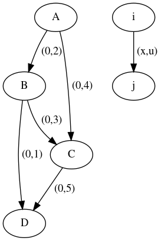
Figure 14: Red original. Nota que todos los flujos son cero inicialmente.
Primera iteración
La red residual, se obtiene haciendo, en el arco \((i,j)\), que su capacidad sea \(u_{ij} - x_{ij}\) y en el arco \((j,i)\), \(x_{ij}\).
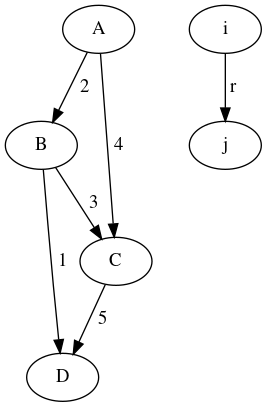
Figure 15: Red residual en la primera iteración.
Existen tres augmented paths: \(A \to B \to D\), \(A \to B \to C \to D\) y \(A \to C \to D\).
Elijamos \(A \to B \to C \to D\) (marcado en azul)
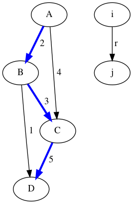
Figure 16: Seleccionamos uno de los tres augmented paths de la red residual (mostrado en azul). La capacidad residual es 2. Todos los arcos son forward arcs.
La capacidad residual del augmented path es 2.
Actualizamos la red original, aumentamos en 2 el flujo del camino \(A\to B \to C \to D\). Todos los arcos de este camino son forward arcs.
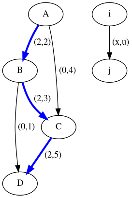
Figure 17: En la red original actualizamos el flujo en 2 unidades sobre el camino de augmented path.
Segunda iteración
Actualizamos la red residual
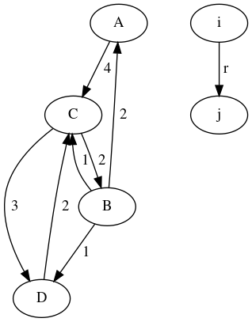
Figure 18: Red residual en la segunda iteración.
Ahora hay dos augmented path: \(A \to C \to D\) y \(A \to C \to B \to D\). Tomemos el primero. Su capacidad residual es 3.
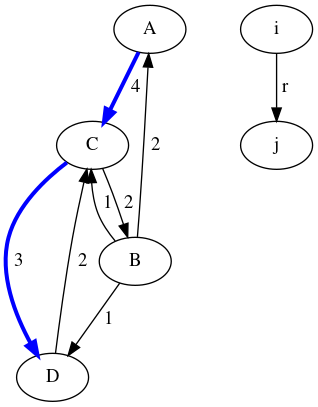
Figure 19: Seleccionamos el augmented path marcado en azul. Su capacidad residual es 3.
Actualizamos la red original, aumentamos en 3 el flujo del camino \(A\to C \to D\). Todos los arcos de este camino son forward arcs.
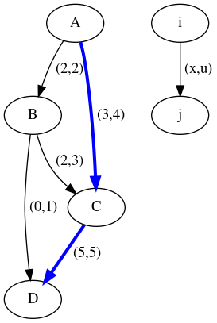
Figure 20: Red original actualizada. Se agregan 3 unidades por el camino A -C - D.
Tercera iteración
Actualizamos la red residual

Figure 21: Red residual en la tercera iteración.
Ahora sólo queda un augmented path \(A \to C \to B \to D\), con capacidad residual de 1
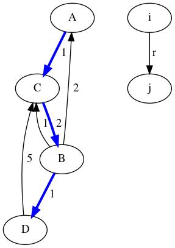
Figure 22: En la tercera iteración de la red residual, sólo queda un camino aumentado, con capacidad residual de 1.
Actualizamos la red original, aumentamos en 3 el flujo del camino \(A\to C \to D\). Los arcos \((A,C)\) y \((B,D)\) son forward arcs, \((C,B)\) es un backward arc.
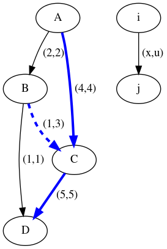
Figure 23: Actualización de los flujos de la red original. Nota que el arco B-C se actualizó restando una unidad, ya que era un backward arc.
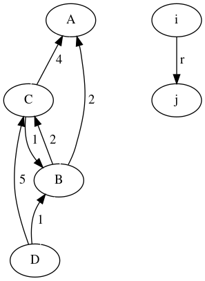
Figure 24: Red residual final. No hay augmented paths. El algoritmo se detiene aquí.
Podemos ejecutar el algoritmo y comprobar nuestra solución encontrada manualmente
G = {}
G['A'] = {}
G['A']['B'] = { 'capacidad':2, 'flujo':0 }
G['A']['C'] = { 'capacidad':4, 'flujo':0 }
G['B'] = {}
G['B']['C'] = { 'capacidad':3, 'flujo':0 }
G['B']['D'] = { 'capacidad':1, 'flujo':0 }
G['C'] = {}
G['C']['D'] = {'capacidad':5, 'flujo':0}
G['D'] = {}
ford_fulkerson(G, 'A', 'D')
Ejemplo
Tomado de [tahaInvestigacionOperaciones10a2017]
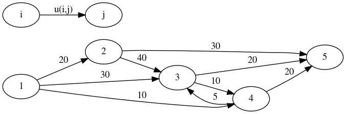
Figure 25: Red para el ejemplo del algoritmo de Ford-Fulkerson. Tomado de [tahaInvestigacionOperaciones10a2017]
Implementación en python
max_flow_0 = {}
max_flow_0["1"] = {}
max_flow_0["1"]["2"] = {'flujo': 0, 'capacidad': 20}
max_flow_0["1"]["3"] = {'flujo': 0, 'capacidad': 30}
max_flow_0["1"]["4"] = {'flujo': 0, 'capacidad': 10}
max_flow_0["2"] = {}
max_flow_0["2"]["3"] = {'flujo': 0, 'capacidad': 40}
max_flow_0["2"]["5"] = {'flujo': 0, 'capacidad': 30}
max_flow_0["3"] = {}
max_flow_0["3"]["4"] = {'flujo': 0, 'capacidad': 10}
max_flow_0["3"]["5"] = {'flujo': 0, 'capacidad': 20}
max_flow_0["4"] = {}
max_flow_0["4"]["3"] = {'flujo': 0, 'capacidad': 5}
max_flow_0["4"]["5"] = {'flujo': 0, 'capacidad': 20}
max_flow_0["5"] = {}
ford_fulkerson(max_flow_0, '1', '5')
Ejemplo

Figure 26: Red para el ejemplo del algoritmo de Ford-Fulkerson
max_flow_1 = {}
max_flow_1["A"] = {}
max_flow_1["A"]["B"] = {'flujo': 0, 'capacidad': 4}
max_flow_1["A"]["C"] = {'flujo': 0, 'capacidad': 4}
max_flow_1["B"] = {}
max_flow_1["B"]["E"] = {'flujo': 0, 'capacidad': 4}
max_flow_1["B"]["D"] = {'flujo': 0, 'capacidad': 4}
max_flow_1["C"] = {}
max_flow_1["C"]["D"] = {'flujo': 0, 'capacidad': 4}
max_flow_1["D"] = {}
max_flow_1["D"]["F"] = {'flujo': 0, 'capacidad': 4}
max_flow_1["E"] = {}
max_flow_1["E"]["F"] = {'flujo': 0, 'capacidad': 4}
max_flow_1["F"] = {}
ford_fulkerson(max_flow_1, 'A', 'F')
Ejemplo: Parque Seervada
Regresemos a la pregunta que no pudimos responder antes:
En temporada alta, hay más personas que quieren ir a T de las que se les puede dar servicio. Para no perturbar/dañar el ecosistema del parque se han establecido límites al número de viajes que pueden hacerse en los tramos. ¿Cómo planear las rutas de los distintos viajes de manera que se maximice el número total de viajes que se pueden hacer al día?
Figure 27: Red de caminos del Parque Seervada. Los arcos muestran su capacidad máxima, no la distancia. Tomado de [hillierINVESTIGACIONOPERACIONES2015]
seervada_flow = {}
seervada_flow['O'] = {}
seervada_flow['O']['A'] = { 'flujo': 0, 'capacidad': 5 }
seervada_flow['O']['B'] = { 'flujo': 0, 'capacidad': 7 }
seervada_flow['O']['C'] = { 'flujo': 0, 'capacidad': 4 }
seervada_flow['A'] = { }
seervada_flow['A']['B'] = { 'flujo': 0, 'capacidad': 1 }
seervada_flow['A']['D'] = { 'flujo': 0, 'capacidad': 3 }
seervada_flow['B'] = { }
seervada_flow['B']['C'] = { 'flujo': 0, 'capacidad': 2 }
seervada_flow['B']['D'] = { 'flujo': 0, 'capacidad': 4 }
seervada_flow['B']['E'] = { 'flujo': 0, 'capacidad': 5 }
seervada_flow['C'] = { }
seervada_flow['C']['E'] = { 'flujo': 0, 'capacidad': 4 }
seervada_flow['D'] = { }
seervada_flow['D']['T'] = { 'flujo': 0, 'capacidad': 9 }
seervada_flow['E'] = {}
seervada_flow['E']['D'] = { 'flujo': 0, 'capacidad': 1 }
seervada_flow['E']['T'] = { 'flujo': 0, 'capacidad': 6 }
seervada_flow['T'] = {}
ford_fulkerson(seervada_flow, 'O', 'T')
Extensiones: Múltiples fuentes y sumideros
Supón que en el problema aparecen varias fuentes y/o varios sumideros, por ejemplo una compañía que tiene una fábrica (fuente) y varios centros de distribución (sumidero). Podemos resolverlo con los algoritmos de max flow si agregamos dos super nodos: super-source, \(S\) y super-sink, \(T\). Agregaremos varios arcos de \(S\) a todos las fuentes originales y de todas los sumideros a \(T\). Las capacidades de estos arcos es \(\infty\). Luego procedemos a resolverlo normalmente.
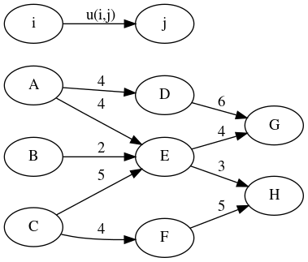
Figure 28: Ejemplo para problemas de flujo máximo con múltiples fuentes y múltiples sumideros.
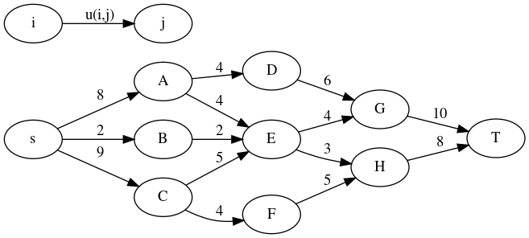
Figure 29: Ejemplo para problemas de flujo máximo con múltiples fuentes y múltiples sumideros, con super nodos añadidos.
Implementación en python
max_flow_2 = {}
max_flow_2["s"] = {}
max_flow_2["s"]["A"] = {'flujo': 0, 'capacidad': 8}
max_flow_2["s"]["B"] = {'flujo': 0, 'capacidad': 2}
max_flow_2["s"]["C"] = {'flujo': 0, 'capacidad': 9}
max_flow_2["A"] = {}
max_flow_2["A"]["D"] = {'flujo': 0, 'capacidad': 4}
max_flow_2["A"]["E"] = {'flujo': 0, 'capacidad': 4}
max_flow_2["B"] = {}
max_flow_2["B"]["E"] = {'flujo': 0, 'capacidad': 2}
max_flow_2["C"] = {}
max_flow_2["C"]["E"] = {'flujo': 0, 'capacidad': 5}
max_flow_2["C"]["F"] = {'flujo': 0, 'capacidad': 4}
max_flow_2["D"] = {}
max_flow_2["D"]["G"] = {'flujo': 0, 'capacidad': 6}
max_flow_2["E"] = {}
max_flow_2["E"]["G"] = {'flujo': 0, 'capacidad': 4}
max_flow_2["E"]["H"] = {'flujo': 0, 'capacidad': 3}
max_flow_2["F"] = {}
max_flow_2["F"]["H"] = {'flujo': 0, 'capacidad': 5}
max_flow_2["G"] = {}
max_flow_2["G"]["t"] = {'flujo': 0, 'capacidad': 10}
max_flow_2["H"] = {}
max_flow_2["H"]["t"] = {'flujo': 0, 'capacidad': 8}
max_flow_2["t"] = {}
ford_fulkerson(max_flow_2, 's', 't')
Extensiones: Capacidades en los nodos
¿Qué sucede si hay un límite en las capacidades que un nodo puede contener? Por ejemplo, en el centro de distribución sólo caben \(k\) camiones. Para resolverlo, dividiremos los nodos en dos: \(in-vertex\) y \(out-vertex\), y agregaremos arcos que van del \(in-vertex\) al \(out-vertex\). La capacidad del nodo será la capacidad del arco. Ahora podemos aplicar el algoritmo de Ford-Fulkerson.
Minimum cost flow
El planteamiento del problema es como sigue:
Sea \(G=(N,A, u, c, b)\) una red dirigida. Para cada arco \((i,j) \in A\) asociamos una capacidad \(u_{ij}\), que especifica la cantidad máxima que puede fluir en el arco. Además cada arco \((i,j) \in A\), tiene asociado un costo \(c_{ij}\) que denota el costo por unidad de flujo en ese arco.
También asociaremos a cada nodo \(i \in N\) un número \(b_i\). Este valor representa la demanda/oferta de cada nodo. Si \(b_i > 0\) decimos que es un supply node, si \(b_i < 0\) el nodo es un demand node. Si \(b_i = 0\) el nodo es un nodo de trans shipment.
A esta red se le llama red de transporte.
El problema de optimización es como sigue:
La primera restricción es conocida como restricción de balance de masa, la segunda son los límites físicos del flujo.
¿Cuándo tiene una solución factible?
Suposiciones
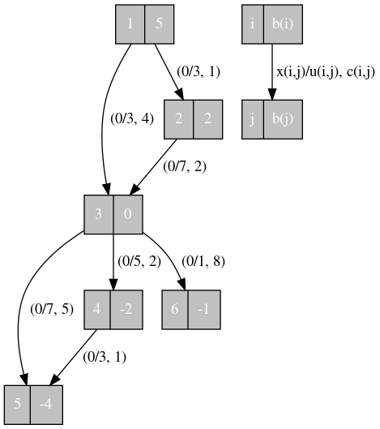
Figure 30: Red original para el ejemplo del min cost flow problem
Ejercicio
Como referencia, la red transformada es:

Figure 31: Red transformada para el ejemplo de min cost flow problem
La solución factible, tiene una red residual (después de remover los nodos \(s\) y \(t\) y todos sus arcos), a la que denotaremos como \(G_x = (N, A_x)\), donde \(A_x\) son los arcos de la red residual de la solución factible con flujo \(x\).
Nota que en esta red la unidad que fluyan de \(i\) a \(j\) en el arco \((i,j)\) incrementan la función objetivo en \(c_{ij}\), y si fluye de \(j\) a \(i\) decrementa la función objetivo en \(c_{ij}\).
Ejercicio
Modifica el método residual_network para tomar en cuenta los costos
¿Cuál es la red residual de la solución factible de la red del
ejercicio anterior?
La red residual de la solución factible de la red del ejercicio es:

Figure 32: Red residual para el ejemplo de min cost flow problem
¿Cómo lo solucionamos?
Existen tres algoritmos para solucionar este problema:
En esta clase sólo veremos los primeros dos.
Algoritmo de cancelación de ciclos
Prueba Dado que el problema del flujo de costo mínimo es un caso especial de programación lineal. Si el problema de programación lineal tiene una solución factible y su función objetivo está acotada, entonces tiene una solución óptima. Si \(G\) no tiene ciclos negativos sin capacidad entonces la función objetivo está acotada por abajo, entonces la solución óptima existe.
Este último teorema nos da el algoritmo de cancelación de ciclos:
algoritmo cycle_cancelling
G_x <- encuentra un flujo factible x en la red
Mientas G_x contenga un ciclo negativo
N <- identifica el ciclo negativo
d <- min{r_ij: (i,j) en N}
aumenta en d unidades el flujo alrededor de W
actualiza G_x
regresa G_x
Algoritmo Bellman Ford
¿Cómo identifico los ciclos negativos?
¿Recuerdas que mencionamos el algoritmo de Bellman Ford cuando vimos shortest path problem? Este algoritmo detecta los ciclos negativos.
En su forma original, el algoritmo es el siguiente:
algoritmo bellman_ford ( G, costs, source, target )
d[i] = infinity para todos los nodos i en N
d[source] <- 0
pred[source] <- None
n <- número de nodos, i <- 0
# Iteración de 1 a n-1
mientras i < (n - 1)
para cada nodo en G
para cada vecino de nodo
relax(nodo, vecino)
d_prev <- d
# Iteración n
# Detección de ciclos negativos
para cada nodo en G
para cada vecino de nodo
relax(nodo, vecino)
si d_prev <> d
# Ciclos negativos detectados
# No hay solución al SPP
pred <- None
d <- None
Donde la función relax es:
relax(nodo, vecino)
si d[vecino] > d[nodo] + costo[nodo][vecino]
d[vecino] > d[nodo] + costo[nodo][vecino]
pred[vecino] = nodo
Algoritmo Successive Shortest path
El algoritmo de cancelación de ciclos mantiene la factibilidad de la solución en cada paso mientras trata de buscar el la solución óptima.
El algoritmo de successive shortest path mantiene la optimalidad (ver Teorema 3 más abajo) en cada paso, mientras trata de alcanzar la factibilidad, es decir en cada paso no cumple con las restricciones de balance de masa.
Recuerda la condición para que un camino más corto sea óptima (condición de "optimalidad" -la verdad no sé si esto sea una palabra en español) es:
\[ d(j) \leq d(i) + c_{ij} \]
La cual puede escribirse, acomodando términos como sigue:
\[ c_{ij}^d = c_{ij} + d(i) - d(j) \geq 0 \]
Siguiendo esto, definimos las siguientes dos cantidades:
\[ c_{ij}^\pi = c_{ij} + \pi_i - \pi_j \]
El costo reducido del nodo (reduced cost) también lo definiremos en la red residual, justo como le hicimos con el costo antes (i.e. si el arco es backwards es costo reducido en \(G_r\) es el negativo del costo en \(G\))
El costo reducido cumple con las siguientes propiedades:
Esta propiedad implica que los node potentials no cambian el camino más corto entre cualquier par de nodos \(k\) y \(l\) (ya que \(\pi(l) - \pi(k)\) es constante). También, estas propiedades implican que si \(W\) es un ciclo negativo con respecto a \(c_{ij}\) , también es un ciclo negativo respecto a \(c_{ij}^\pi\).
\[ e(i) = b(i) + \sum_{j:(j,i) \in A} x_{ji} - \sum_{j:(i,j) \in A} x_{ij} \]
Si esta cantidad es estrictamente positiva, diremos que \(i\) es un nodo con exceso, si es estrictamente negativa, \(-e(i)\) es el déficit del nodo, y si \(e(i) = 0\) diremos que el nodo está balanceado.
Usando \(e(i)\) definimos a los conjuntos \(E\) y \(D\) como los conjuntos conformados con nodos con exceso y nodos on déficit, respectivamente.
Como \(\sum_{i \in N} e(i) = \sum_{i \in N} b(i)\), se tiene que \(\sum_{i \in E} e(i) = - \sum_{i \in D} e(i)\)
Teorema 3 Una solución factible \(x^*\) es una sólución óptima del problema de flujo de costo mínimo si y sólo si un conjunto de potenciales de nodo \(\pi\) satisface la siguiente condición reducida de optimalidad
\[ c_{ij}^\pi \geq 0 \qquad \text{para todo arco} \quad (i,j) \in G(x^*) \]
Esta es la condición de optimalidad que mantiene el algoritmo en cada paso.
Lema 1 Supón que el pseudoflujo \(x\) satisface la cóndición reducida de optimalidad con respecto a algunos potenciales \(\pi\). Sea \(d\) el vector que representa los caminos más cortos de algún nodo \(s\) a todos los demás nodos en la red residual de \(G(x)\) con \(c_{ij}^\pi\) como el costo del arco \((i,j)\), entonces:
Lema 2 Supón que el pseudoflujo \(x\) satisface las condiciones de optimalidad reducidas. Si definimos \(x'\) a partir de \(x\) mandando flujo a lo largo del camino más corto de \(s\) a algún nodo \(k\), entonces \(x'\) también satisface las condiciones de optimalidad reducidas.
Usando estos lemas y teoremas, podemos enunciar el algoritmo:
algoritmo ssp
x <- 0; pi <- 0
e(i) = b(i)
E = {i: e(i) > 0}; D = {i: e(i) < 0}
while E:
- Selecciona k en E, l en D
- Determina el camino más corto, d(j), desde k a todo los nodos en la red residual de G(x) con respecto al costo reducido c_ij^pi
- Sea P el camino más corto entre k y l
- pi <- pi - d
- delta <- min [ e(k), -e(l), min[r_ij: (i,j) en P]]
- Aumenta delta unidades el flujo a lo largo del camino P
- Actualiza x, G(x), E, D y los costos reducidos
regresa G(x)